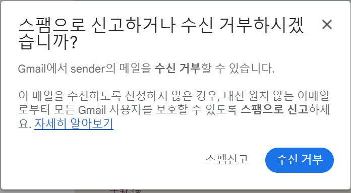

*이 글은 hirachan님의
Gmailの送信者のガイドラインの強化がもたらす未来를 번역한 것입니다.
번역과 공개는 저자의 동의 하에 이루어졌음을 밝힙니다.
Gmail의 이메일 발신자 가이드라인이 강화된지 2주 이상 지났습니다. 여러분 어떻게 지내고 계시는지요. 이번 일로 여러 가지 생각이 많으시겠지만 Google이 왜 이런 정책을 취했는지 그리고 가까운 장래 또는 먼 미래에 이메일 보안은 어떻게 될 것인지 생각해 보려고 합니다.
스팸 메일이라 해도 사람마다 그 정의는 다를지도 모릅니다. 이번 조치로 Google은 그 정의를 보다 명확하게 표명했습니다. 예를 들면 "발신자를 사칭하는 메일". 최근에는 아마존이나 신용카드 회사를 사칭하는 발신자 사칭 메일이 많습니다. 이러한 메일은 100% 스팸 메일이라고 판단해 수신할 필요는 없을 것입니다.
쇼핑몰 사이트로부터의 메일은 어떨까요. 예를 들면 취미로 장난감을 살 떄 등록한 점포로부터 매월 신제품 정보가 옵니다. A씨는 매일 즐거운 마음으로 신제품 리뷰를 즐기고 있습니다. 그러나 B씨의 경우, 처음에는 즐거웠지만 최근에는 관심이 사라져 솔직히 매일 오는 메일이 귀찮게 느껴지고 있습니다. B씨는 이 점포의 메일을 스팸메일로 보고해 수신함에 도착하지 않도록 했습니다. 이러한 광고 메일의 경우 사람에 따라 읽고 싶은 메일일 수도 있고 스팸 메일일 수도 있는 등 판단이 달라집니다.
이번 Google의 조치는 심플합니다.
이처럼 지금까지 막연했던 스팸 메일의 정의가 어느 정도 확실해졌습니다.
발신자 사칭이 아닌 진짜 발신자임을 판단하는 것에는 다음 정보가 사용됩니다.
위와 같은 사항들이 올바르게 설정되어 있지 않으면 발신자 사칭의 가능성이 있다고 판단되어 스팸 메일로 취급받을 수 있습니다.
단 여기서 말하는 진짜 발신자라는 것은 어디까지나 해당 발신처 도메인에서 보내졌다는 것입니다. 발신처 도메인 자체가 진짜인지 가짜인지는 알 수 없습니다. 예를 들면 giiithub.com 이라는 도메인으로부터 GitHub 의 안내 메일과 비슷한 메일이 왔을 경우, 위와 같은 기술로 giiithub.com 에서 온 것은 보증되지만 진짜 GitHub 로부터 메일인지 아닌지는 알 수 없습니다.
광고메일의 구독해제가 불가능하면 수신자는 스팸메일로 보고할 수 있게 되기 때문에 Gmail 에서는 스팸으로 판정해 버리게 됩니다. 수신자가 해당 메일을 스팸으로 보고하지 않도록 하기 위하여 구독해제 기능이 필요해집니다. 구독해제 기능이 보급되면 해당 광고메일을 읽고 싶은 사람만이 메일을 수신하는 세계가 될 것입니다. 구체적인 방법은 List-Unsubscribe 헤더와 List-Unsubscribe-Post 헤더를 메일에 기재하는 것입니다. 이로 인해 메일링리스트로 온 광고메일에 구독해제 라는 버튼이 표시되고 구독의 필요성을 느끼지 못하는 수신자는 스팸메일로 보고가 아니라 구독해제를 함으로써 광고메일이 스팸메일로 처리되지 않게 됩니다.
또한 만에 하나 스팸메일로 보고를 한다고 해도 다음과 같이 표시되어 구독해제로 유도됩니다. 구독자는 줄겠지만 스팸메일로 보고되는 메일 수가 느는 것은 아니므로 단체 메일 발신은 영향을 받지 않게 됩니다.
앞으로 광고메일을 발신하는 업자들은 구독해제가 되지 않도록 보다 높은 퀄리티의 컨텐츠를 요구받게 될지도 모르겠습니다.
이미 서둘러 대응하신 분들도 많겠습니다만 방침으로써 몇 가지 생각해 볼 수 있습니다.
2023년 10월 갑자기 발표되어 곤란하다는 의견도 있겠지만 사실 이러한 기술들은 상당히 예전부터 존재해 왔습니다. SPF는 2006년, DKIM은 2011년, DMARC는 2015년입니다. 암호화기술 START TLS는 2002년입니다. List-Unsubscribe-Post도 2017년이므로 별써 7년이나 경과했습니다. 갑작스러운 선언이 아니라, 때가 무르익었기 때문에 필수 사항로 지정했다라고 생각하는 편이 좋겠습니다.
이런 이유로 기본적으로는 Google 이메일 발신자 가이드라인을 충실히 따를 것을 추천합니다. 기술적인 부분 외에도 광고메일이라면 구독해제되지 않을 컨텐츠 작성 필요할지 모릅니다.
그런데 Gmail의 이메일 발신자 가이드라인에서 DMARC의 정책은 none으로도 괜찮다고 되어 있습니다만, SPF 나 DKIM 이 필수이고 Header From 과의 얼라인먼트도 필요하기 때문에 실질적으로는 p=reject 나 p=quarantine 과 다르지 않습니다. 오히려 SPF, DKIM 양쪽을 추천한다는 점에서 DMARC보다 엄격한 룰이라고 할 수 있습니다. Gmail 의 이메일 발신자 가이드라인을 충족시키기 위해서라면 DMARC는 p=reject로 설정합시다. Gmail 이외의 수신처에 대해서도 안전한 대책이 될 것입니다.
한편 일각에서는 Gmail 발신자 가이드라인에 대한 대응 방침으로 Gmail 이외의 메일주소로 수신하게 한다는 대응도 있는 듯 합니다.
그러나, Gmail 이외라면 수신이 가능할 것이라는 생각은 잘못되었다고 생각합니다. 발신자 사칭이 아니라고 증명할 수 없기 때문에 스팸메일함에 들어가 있을지도 모르고 악의를 가진 사람이 발신자 사칭 메일을 보낼지도 모릅니다. 무엇보다 Gmail 외에서 수신해 주십시오 라는 안내해 버리면 이를 본 악의를 가진 사람은 이 도메인은 사칭 가능한 도메인이라고 판단하게 됩니다.
또한, 스팸메일함에 들어가면 곤란하다는 이유로 이 메일주소를 스팸메일이 되지 않도록 화이트리스트에 등록해 주십시오 라는 안내를 하는 경우도 봅니다. 이것은 절대로 해서는 안되는 일입니다. 이 메일주소를 사칭해 보내도 스팸메일로 분류되지 않고 진짜 메일과 구분없이 수신됩니다 라고 악의를 가진 사람에게 일부러 알려주는 것이 되기 때문입니다.
발신자가 대책을 도입하면 발신처 도메인이 사칭당했는지 아닌지를 알 수 있게 됩니다. 그러나 이 정보를 사용할 것인지 아닌지는 수신 메일 서버에게 달려있습니다. Gmail과 같은 발신자사칭 의혹이 있는 메일은 수신하지 않는다고 제한한다면 수신자에게는 발신자사칭 메일이 도착하지 않게 됩니다. 제한한다면 수신자는 지금까지와 마찬가지로 발신자 사칭 메일이 도착합니다. 어쩌면 Gmail에는 사칭이 불가능하므로 악의가 있는 사람은 제한을 하지 않는 곳을 노릴지도 모릅니다. 그렇게 되면 지금까지 이상으로 발신자 사칭이 늘어나게 될지도 모릅니다. 이러한 미래를 예상했는지 Softbank에서는 당장 DMARC 대응을 표명했습니다.
또한, 송신자측에서 확실히 대응한다면 광고메일에는 구독해제 기능이 들어있을 것입니다. 수신자측에서 Web 메일등에서는 List-Unsubscribe(-Post) 헤더를 이용한 구독해제 기능을 제공하는 것이 이용자를 위한 것이 될 것이며 필요 없는 메일을 수신하지 않아도 되게 됩니다.
발신자 사칭이 존재하지 않는 세계입니다. 그러나 중요한 것은 발신자 사칭되지 않는 것은 어디까지나 발신처의 도메인이라는 것입니다. 이 도메인이 진짜와 비슷한 도메인이라면 진짜와 비슷한 도메인에서 발신된 도메임이라는 것은 증명되지만 이것이 진짜인지 아닌지는 모릅니다. 진짜 조직의 도메인이라는 것을 수신자에게 전달하는 것에는 진짜 조직이 진짜 도메인은 이것이라고 알리는 수 밖에 없습니다. 쓰다보니 어쩐지 고이즈미 신지로 씨 말투 같아졌습니다만, 이 문제를 로고 표시로 해결하려고 하는 것이 BIMI 라는 기술입니다. BIMI에 대해서는 다음 링크의 블로그를 참조해 주십시오.
로고 표시에는 증명서가 필요하고 증명서 취득은 등록상표로 확입합니다. 이것에는 시간과 돈이 들며 비슷한 로고를 등록하려고 해도 상표등록 단계에서 배제되므로 실질적으로 사칭 불가능하다는 것입니다. 이러한 미래를 위해 발신자는 정방향 로고의 상표등록과 BIMI 준비를 추진하는 것이 좋을 것입니다. 또한 수신측 Web 메일 등에서 BIMI 로고를 표시하도록 준비를 하는 것이 좋을 것이라 생각합니다.
BIMI 이외에도 도메인 레퓨테이션 등으로 진짜인지 아닌지 판단하게 될지 모릅니다. 한 가지 잊은 것이 있습니다. 모든 경로가 START TLS로 암호화된 세계입니다. START TLS를 필수로 하는 기술로서 MTA-STS와 DANE이 있습니다. 현재는 TLS를 사용할 수 없으면 평문으로 보낸다는 상태입니다. Gmail이 TLS 아닌 통신을 접수하지 않게 됨으로써 모든 발신자가 TLS 대응하게 된다면 모든 수신자는 평문으로 통신을 접수하지 않아도 되게 될 것입니다. 그렇게 된다면 모든 발신자는 평문으로 보낸 필요가 없어지고 모든 SMTP가 START TLS로 암호화된 세계가 찾아 옵니다. MTA-STS나 DANE의 보급 이전에 이러한 독자 세계나 제한으로 TLS가 보급될지도 모릅니다. 실제로 일본에는 수신처가 START TLS 대응되어 있지 않으면 평문으로 보내는 것이 아니라, 아예 보내지 않도록 하는 제품을 만드려고 하는 곳도 있습니다.
여러 가지 썼습니다만, 아직 앞으로의 일이라고 미룬다면 또 당황하는 일이 생길지 모릅니다. 지금부터라도 우선 DMARC p=none이 아니라 p=reject로 쓰는 것부터 시작하면 어떨까요.
이상으로 2024년 2월 강화된 Gmail의 이메일 발신자 가이드라인의 목적과 효과를 정리해 보았습니다. 발신자 사칭 가능성을 최소화하고 구독자가 원하지 않는 광고 메일의 수신을 줄이기 위한 Google의 노력은 메일 보안에 있어 중요한 포석으로 평가됩니다. 앞으로도 이러한 노력이 계속되어 안전하고 효율적인 이메일 통신 환경을 구축하는 데 이바지할 것을 기대합니다.
원문 Gmailの送信者のガイドラインの強化がもたらす未来
참조 Gmail - 이메일 발신자 가이드라인
Translated and published by Mihyon Mar 6, 2024